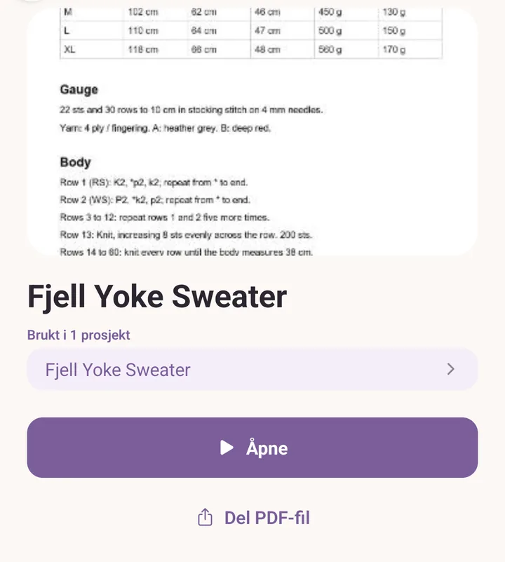
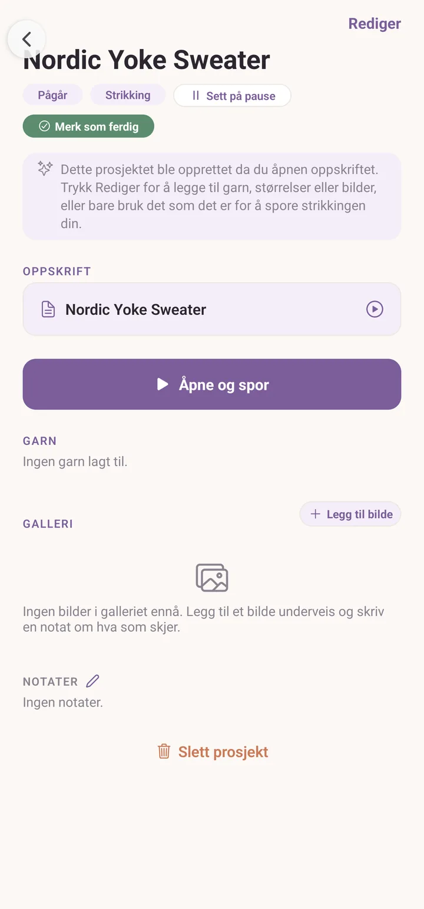
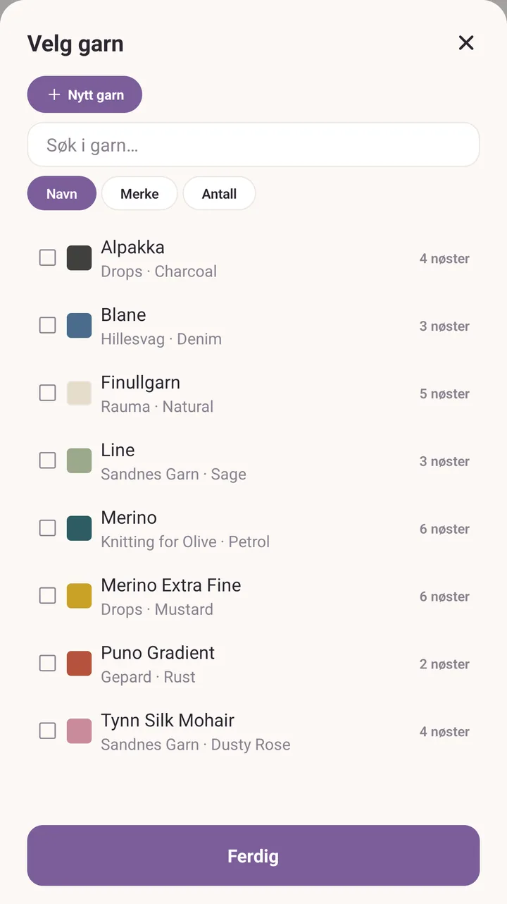
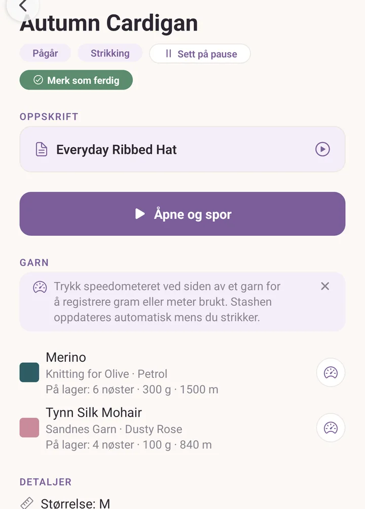

Ditt første prosjekt
Når du er ferdig med dette, har du et prosjekt som vet hvilken oppskrift du følger og hvilket garn fra stashen du bruker opp på det.
Før du begynner
Har du allerede laget et prosjekt fra kortet med tre trinn på Prosjekter-fanen, åpner du det og tar dette opp igjen ved garntrinnet. Ellers trenger du to ting i appen fra før:
- én oppskrift i Oppskrifter, importert eller skrevet selv,
- ett garn i Stash.
Har du ingen av delene, har Kom i gang kortet med tre trinn som legger dem inn.
Trinn
Trykk Oppskrifter og trykk på oppskriften du vil lage. Forhåndsvisningen åpner seg, med forsiden, notatene og knappene.
Trykk Åpne. Oppskriften åpner seg så du kan lese den, og Purl lager i stillhet et prosjekt for den, oppkalt etter oppskriften og allerede satt til Pågår. Du trenger ikke gjøre noe for at det skal skje.

Gå tilbake, og trykk Prosjekter. Det nye prosjektet ditt ligger øverst, under Pågår, med navnet til oppskriften.
Trykk på prosjektet. Det forteller deg at det ble laget da du åpnet oppskriften, og inviterer deg til å fylle inn resten.

Trykk Rediger. Prosjektredigeringen åpner seg.
Bla ned til Garn og trykk Legg til garn fra stashen. Velgeren Velg garn åpner seg med hele stashen din i.
Trykk på garnet du bruker. Det blir en rad på prosjektet. Legg til ett til hvis du strikker dobbelt eller arbeider med en kontrastfarge.

I feltet Trenger på den raden skriver du hvor mange nøster du regner med å bruke. Dette er et anslag, og du kan endre det når du vil.
Trykk Lagre endringer.
Du er tilbake på prosjektet. Hver garnrad viser nå hva du sa at du trenger, og hvor mye av det som er igjen i stashen. Knappen med speedometeret ved siden av er der du noterer hva du faktisk har brukt.

La Purl velge garnet for deg
Hvis oppskriften sier hvilket garn den er skrevet for, har forhåndsvisningen én knapp til: Velg garn fra stashen. Den åpner Garn for denne oppskriften, som tar oppskriftens farger én om gangen og navngir den beste kandidaten i stashen din, eller sier rett ut at ingenting du eier passer. Trykk på et forslag for å se på det garnet før du bestemmer deg. Knappen dukker bare opp når oppskriften sier hva den trenger.
Hvis det går galt
- To prosjekter på samme oppskrift. Det blir det ikke. Å åpne en oppskrift du har åpnet før tar deg tilbake til prosjektet du allerede har, i stedet for å lage et nummer to.
- Garnvelgeren er tom. Stashen din er tom ennå. Trykk Nytt garn øverst i velgeren, eller gå til Stash og trykk Legg til.
- Lagre endringer er nedtonet. Et prosjekt trenger et navn før det kan lagres. Bla til toppen av redigeringen og gi det ett.
Videre
- Prosjekter, for statuser, bilder, strikkefasthet og resten av prosjektsiden.
- Les en oppskrift, for å holde plassen din når du faktisk har lagt opp.